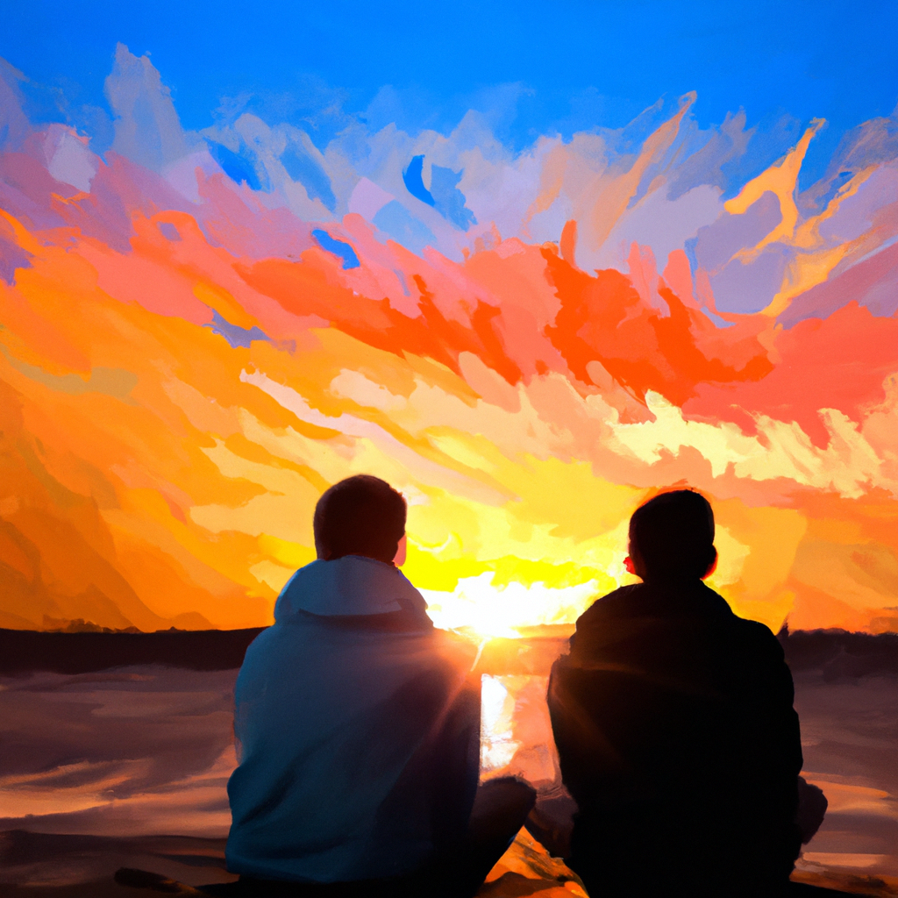

Eeuwige Band
Dit gedicht beschrijft de waarde en betekenis van vriendschap. Het gebruikt beelden van de natuur, zoals een rots in de branding, om de stabiliteit en duurzaamheid van vriendschap uit te drukken.

Vriendschap is als een rots in de branding,
altijd sterk, onveranderlijk en standvastig.
Het is een schouder om op te huilen,
en een luisterend oor in tijden van nood.
Vriendschap is lachen tot je buik pijn doet,
en samen dromen over de toekomst.
Het is elkaar steunen in goede en slechte tijden,
en weten dat er altijd iemand is die voor je zal zijn.
Vriendschap is een cadeau,
dat met de tijd alleen maar groeit,
en ons helpt om door het leven te gaan,
met een glimlach op ons gezicht.
Vriendschap is een schat,
die we koesteren en beschermen,
want vrienden zijn de familie die we kiezen,
en voor eeuwig in ons hart zullen blijven.